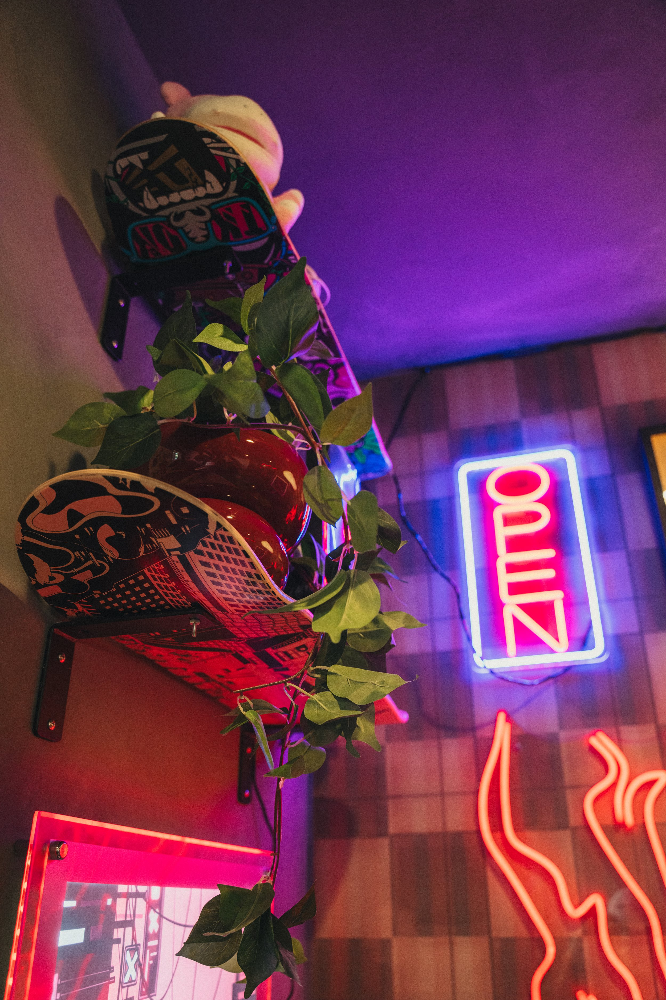
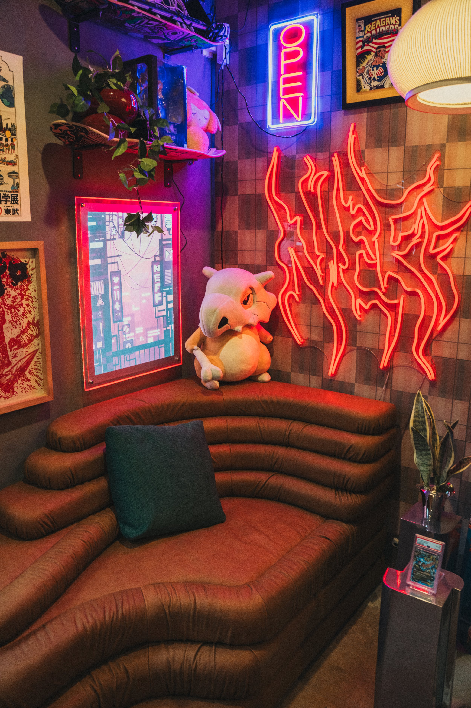
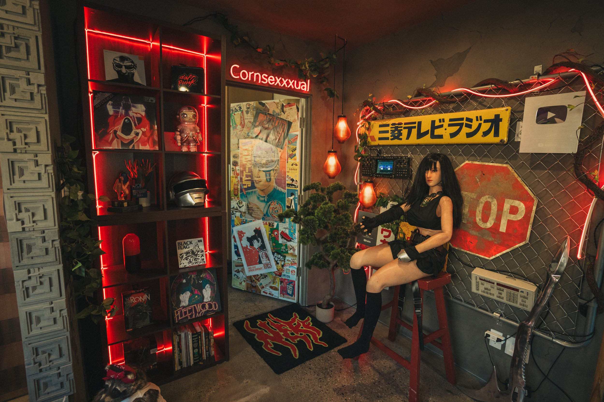
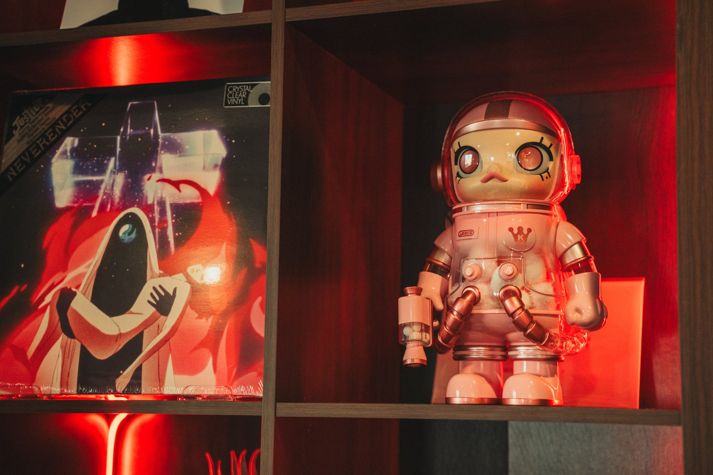

Will neff stream room
Client: Will Neff
Year: 2025
Role: Set Fabrication | Set Design | Production
From demo to final detail, we transformed this space into a retro, sci-fi noir hideout - moody, cinematic, and full of layered references. Think Blade Runner meets Akira with a touch of Dune - a visual narrative that rewards repeat glances.
We used a bold palette of bright red, graphite, and slate, blending industrial materials (metal, concrete, neon) with organic chaos (plants, plush, wood vinyl). The result feels like a Justice track, a Moebius comic, and a dream scored by Berlioz. In the lounge corner, a sculptural leather terrazzo couch sits like something out of Dune - monolithic and strange - framed by custom skateboard shelves that add a playful, streetwise edge.
At the back, a feature bathroom door styled like a night-alley bar entrance completes the scene - an unexpected portal that pulls the sci-fi noir vibe through to the smallest detail.




